Learning from AI Personas: Can marketers learn about consumers across the political divide by interacting with AI
Abstract
Political polarization poses a fundamental challenge for marketers who must communicate effectively with ideologically diverse consumers. Misperceptions about political outgroups—where partisans hold exaggerated and inaccurate views of those across the political divide—can undermine marketing strategies targeting broad consumer bases. This study tests whether brief interactions with an AI chatbot representing a political outgroup can improve marketers’ understanding of that outgroup and reduce affective polarization. Participants interacted with a chatbot prompted to represent their political outgroup and responded to questions about environmental attitudes before and after the interaction. Results demonstrate that chatbot interactions significantly improved both belief accuracy and warmth toward the outgroup. However, these effects were asymmetric: Democrats learning about Republicans showed substantially greater accuracy improvements than Republicans learning about Democrats, though both groups increased warmth at similar rates. Political extremism predicted greater baseline bias and lower warmth but did not moderate the intervention’s effectiveness, indicating that both moderate and extreme partisans benefited equally. Bot informativeness predicted better outcomes, while perceived empathy did not. These findings suggest AI-mediated interactions offer a scalable tool for reducing political misperceptions in consumer research, though important questions remain about domain specificity, temporal durability, and how insights from AI interactions transfer to understanding actual outgroup members.
1 Introduction
Political polarization undermines marketers’ ability to understand and serve ideologically diverse consumers (Hsieh et al., 2024). Partisans hold exaggerated views of political outgroups (Iyengar et al., 2019; Yudkin et al., 2019), misperceptions that can lead to ineffective marketing strategies when firms target broad consumer bases.
Intergroup contact reduces prejudice and corrects misperceptions (Allport, 1954; Pettigrew & Tropp, 2006), but real-world contact is logistically costly, socially awkward, and increasingly rare across party lines. Recent advances in AI enable “synthetic contact”—conversations with AI chatbots representing outgroup members—that may replicate these benefits at scale (Hermann et al., 2025).
Whether AI-mediated contact can genuinely reduce political misperceptions is unclear. On one hand, chatbot interactions might provide corrective information about outgroup attitudes while fostering empathic understanding through open dialogue. On the other hand, participants may dismiss AI-generated perspectives as inauthentic or may selectively attend to information that confirms existing biases. Even if participants update their beliefs, they may lack metacognitive awareness of this learning—becoming more accurate without becoming more confident, or vice versa.
We test whether brief interactions with an AI chatbot representing a political outgroup improve belief accuracy and reduce affective polarization. We examine both informational mechanisms (does the chatbot provide useful information?) and empathic mechanisms (does the chatbot foster emotional connection?), and assess whether participants gain metacognitive insight into their improved understanding. We recruited 500 partisan participants (prescreened to exclude moderates; 248 Democrats, 252 Republicans). Participants reported their own environmental attitudes, estimated the environmental attitudes of the average Democrat and Republican, and rated their warmth toward each political group. They then conversed for 10 minutes with a chatbot prompted to represent their political outgroup before re-rating outgroup warmth and re-estimating outgroup environmental attitudes. We hypothesized that participants would report more accurate beliefs about outgroup environmental attitudes and warmer feelings toward the political outgroup after the interaction.
2 Results
2.1 Partisans misperceive each other
Participants systematically misperceived the environmental attitudes of their political opponents. Most participants held strong partisan identities, with the majority in the top and bottom quartiles of the political spectrum (Figure 2). Democrats rated themselves higher in environmental concern (M = 4.15) relative to Republicans (M = 3.73), d = 0.46, p < .001. While participants accurately perceived their ingroups (Democrats: Mactual = 4.15, Mperceived = 4.17, p = 0.558; Republicans: Mactual = 3.73, Mperceived = 3.39, p < .001), they systematically underestimated how environmentally friendly their counterparts actually were. Democrats misperceived Republicans far more than Republicans misperceived Democrats.
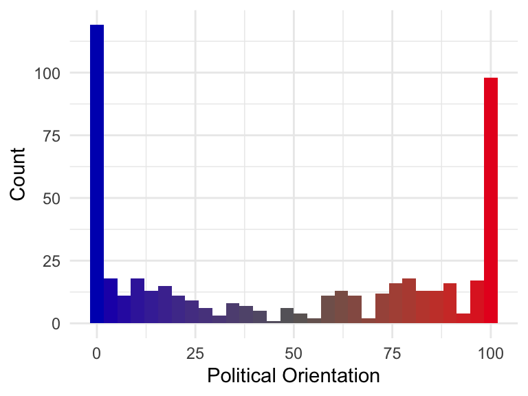
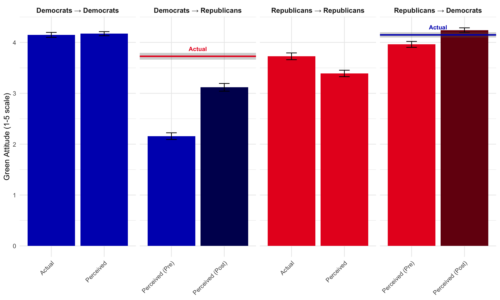
We quantified this bias by calculating each participant’s absolute error from the actual mean and reverse-scoring it so that higher values indicate greater accuracy. Democrats showed significantly greater bias about Republicans (M = -1.68, SD = 0.84) than Republicans showed about Democrats (M = -0.70, SD = 0.63), d = -1.32, p < .001 (Figure 4).
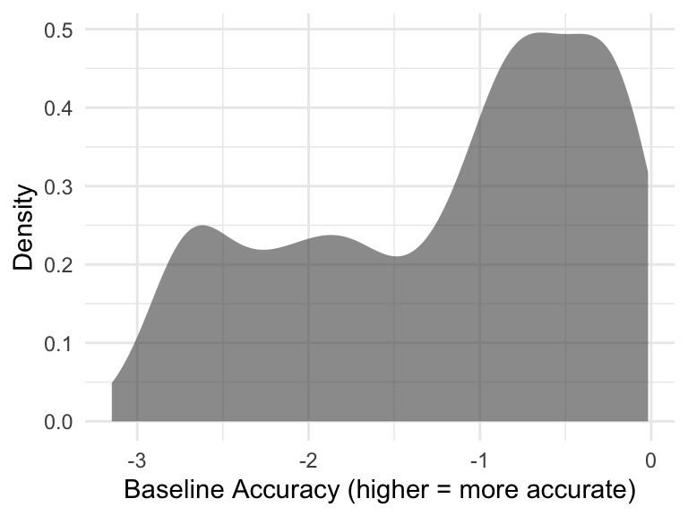
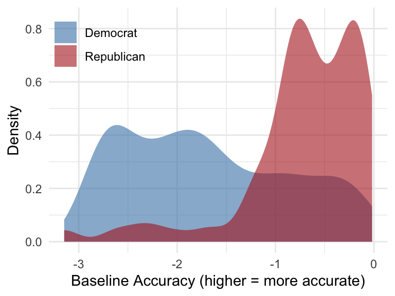
Participants who at baseline felt warmer towards the outgroup were also more accurate in their perceptions. This relationship held for both Democrats (r = 0.56, p < .001) and Republicans (r = 0.27, p < .001).
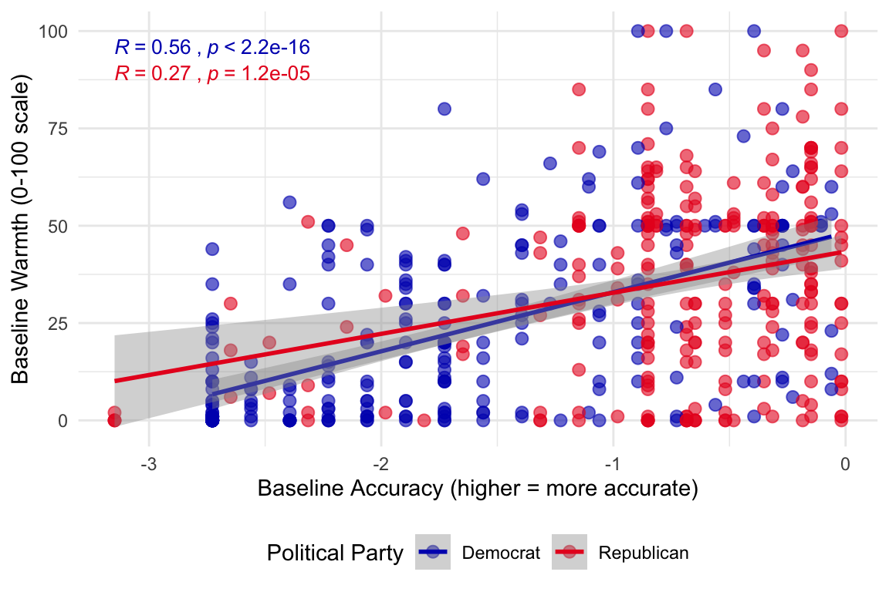
2.2 Do people update their beliefs after interacting with the chatbot?
We examined whether participants changed their beliefs about the outgroup’s environmental attitudes from pre- to post-interaction, analyzing both accuracy and warmth. As shown in the table below, participants became significantly more accurate (improving by 0.39 points on the 5-point scale, d = 0.49) and warmer toward the outgroup (increasing by 4.3 degrees on the 100-point thermometer, d = -0.17).
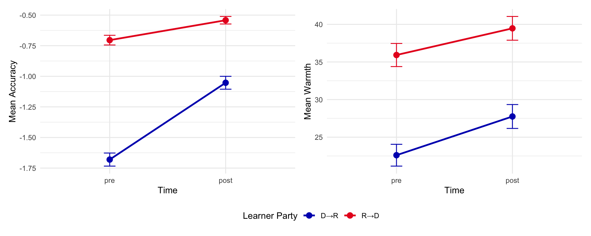
| Accuracy | Warmth | |
|---|---|---|
| + p < 0.1, * p < 0.05, ** p < 0.01, *** p < 0.001 | ||
| Note: Accuracy is negative absolute error (higher = more accurate). * p<0.05, ** p<0.01, *** p<0.001 | ||
| Time (Post) | 0.393*** | 4.342*** |
| (0.038) | (0.525) | |
| Num.Obs. | 1000 | 1000 |
Democrats who became more accurate towards Republicans also became warmer towards them (r = 0.22, p < .001), but this relationship did not hold for Republicans learning about Democrats (r = -0.01, p = 0.888).
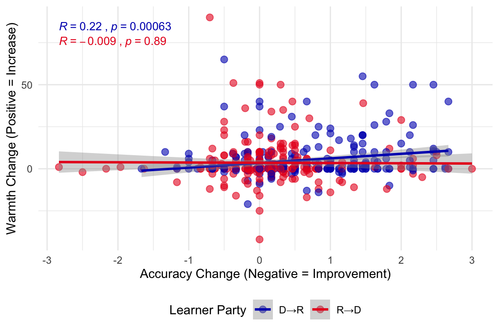
2.3 Is belief updating symmetric across political groups?
While both groups became more accurate, it was Democrats learning about Republicans who showed greater improvement (b = 0.63, d = 0.75, p < .001). Republicans also became less biased about Democrats, though to a lesser extent (b = 0.16, d = 0.29, p = 0.002). The interaction term was significant (b = -0.46, p < .001).
Both groups became warmer toward the outgroup at similar rates. Democrats learning about Republicans increased warmth by 5.1 degrees (d = -0.21, p < .001), while Republicans learning about Democrats increased by 3.5 degrees (d = -0.14, p < .001). The interaction was not significant (b = -1.60, p = 0.127).
| Accuracy | Warmth | |
|---|---|---|
| + p < 0.1, * p < 0.05, ** p < 0.01, *** p < 0.001 | ||
| Note: Accuracy is negative absolute error (higher = more accurate). * p<0.05, ** p<0.01, *** p<0.001 | ||
| Time effect (Democrat) | 0.628*** | 5.149*** |
| (0.052) | (0.744) | |
| Time effect (Republican) | 0.163** | 3.548*** |
| (0.051) | (0.738) | |
| Time (Post) | 0.628*** | 5.149*** |
| (0.052) | (0.744) | |
| Learner Party (R→D) | 0.976*** | 13.324*** |
| (0.064) | (2.178) | |
| Time × Learner Party | -0.465*** | -1.602 |
| (0.073) | (1.048) | |
| Num.Obs. | 1000 | 1000 |
2.4 Does political extremity predict how much people update?
Politically extreme participants showed greater bias about the outgroup at baseline (b = -0.012, r = -0.20, p < .001) and felt less warm toward them (b = -0.54, r = -0.31, p < .001).
The intervention was as successful in increasing accuracy and warmth in more extreme partisans as it was for more moderate ones. The three-way interaction for accuracy was not significant (b = 0.007, p = 0.185), and for warmth was not significant (b = 0.08, p = 0.315).
| Accuracy | Warmth | |
|---|---|---|
| + p < 0.1, * p < 0.05, ** p < 0.01, *** p < 0.001 | ||
| Note: Time effects show pre-to-post change at Low Extremism (-1 SD) and High Extremism (+1 SD). Three-way interaction tests whether extremism moderates differential updating. * p<0.05, ** p<0.01, *** p<0.001 | ||
| Time effect (Low Extremism) | 0.386*** | 3.847*** |
| (0.053) | (0.761) | |
| Time effect (High Extremism) | 0.419*** | 5.002*** |
| (0.052) | (0.744) | |
| Time (Post) | 0.721*** | 5.039* |
| (0.168) | (2.416) | |
| Learner Party (R→D) | 0.898*** | 14.760* |
| (0.186) | (6.214) | |
| Political Extremism | -0.008* | -0.429*** |
| (0.003) | (0.115) | |
| Time × Learner Party | -0.726*** | -4.336 |
| (0.215) | (3.092) | |
| Time × Extremism | -0.002 | 0.003 |
| (0.004) | (0.057) | |
| Learner Party × Extremism | 0.001 | -0.088 |
| (0.005) | (0.152) | |
| Time × Learner Party × Extremism | 0.007 | 0.076 |
| (0.005) | (0.076) | |
| Num.Obs. | 1000 | 1000 |
2.5 Is belief updating associated with how the chatbot is perceived?
Participants who found the chatbot more informative showed significantly better accuracy improvement (b = 0.086, p = 0.004) and significantly greater warmth increases (b = 1.93, p < .001). Bot empathy did not significantly predict accuracy change (b = 0.050, p = 0.091) or warmth change (b = 1.01, p = 0.056). Perceptions of bot empathy and informativeness correlated positively but modestly (r = 0.35, p < .001), suggesting they captured partially distinct aspects of chatbot interaction quality (Figure 8).
| Accuracy | Warmth | |
|---|---|---|
| + p < 0.1, * p < 0.05, ** p < 0.01, *** p < 0.001 | ||
| Note: Regressions control for pre-interaction values. * p<0.05, ** p<0.01, *** p<0.001 | ||
| Baseline Accuracy | 0.354*** | |
| (0.033) | ||
| Baseline Warmth | 0.910*** | |
| (0.021) | ||
| Bot Informativeness | 0.086** | 1.927*** |
| (0.029) | (0.524) | |
| Bot Empathy | 0.050+ | 1.010+ |
| (0.029) | (0.527) | |
| Num.Obs. | 500 | 500 |
| R2 | 0.241 | 0.805 |
| R2 Adj. | 0.236 | 0.804 |
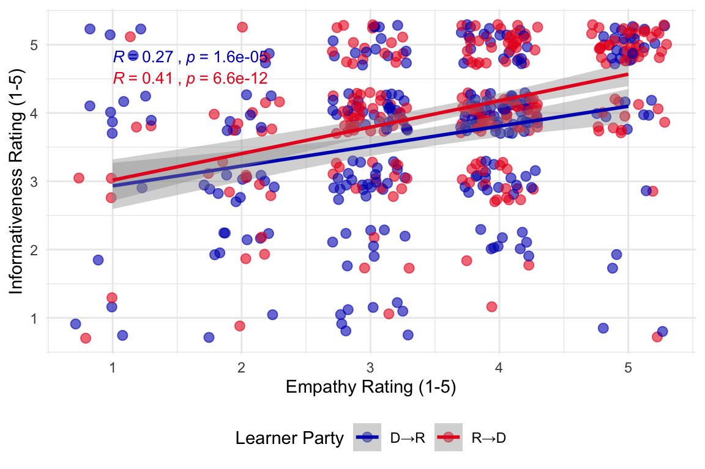
2.6 Does engagement (“dose”) matter for belief updating?
For the most part, the dose of the intervention that participants chose to take was unrelated to how much they updated their beliefs, or to whether they became more warm.
Participants engaged in an average of 11.11 conversation turns (SD = 6.00) and typed an average of 199.86 words (SD = 123.31).
Greater engagement—measured by turn count—was not significantly associated with accuracy change (b = -0.0020, p = 0.672), and not significantly associated with warmth change (b = -0.0956, p = 0.272).
Using log-transformed word count, the effect on accuracy was not significant (b = -0.0496, p = 0.442), and on warmth was not significant (b = -0.8687, p = 0.461).
The only exception to the pattern, shown in Figure 9, was that Democrat partisans who wrote more words to the chatbot were more likely to increase in accuracy, but this was not true for turn count.
| Accuracy | Warmth | |||
|---|---|---|---|---|
| Turn Count | Log(Word Count) | Turn Count | Log(Word Count) | |
| + p < 0.1, * p < 0.05, ** p < 0.01, *** p < 0.001 | ||||
| Learner Party (R→D) | 0.202** | 0.204** | -0.828 | -0.778 |
| (0.068) | (0.068) | (1.082) | (1.082) | |
| Baseline Accuracy | -0.684*** | -0.686*** | ||
| (0.039) | (0.039) | |||
| Baseline Warmth | -0.062** | -0.063** | ||
| (0.022) | (0.022) | |||
| Turn Count | -0.002 | -0.096 | ||
| (0.005) | (0.087) | |||
| Log(Word Count) | -0.050 | -0.869 | ||
| (0.064) | (1.178) | |||
| Num.Obs. | 500 | 500 | 500 | 500 |
| R2 | 0.434 | 0.434 | 0.022 | 0.021 |
| R2 Adj. | 0.430 | 0.431 | 0.016 | 0.015 |
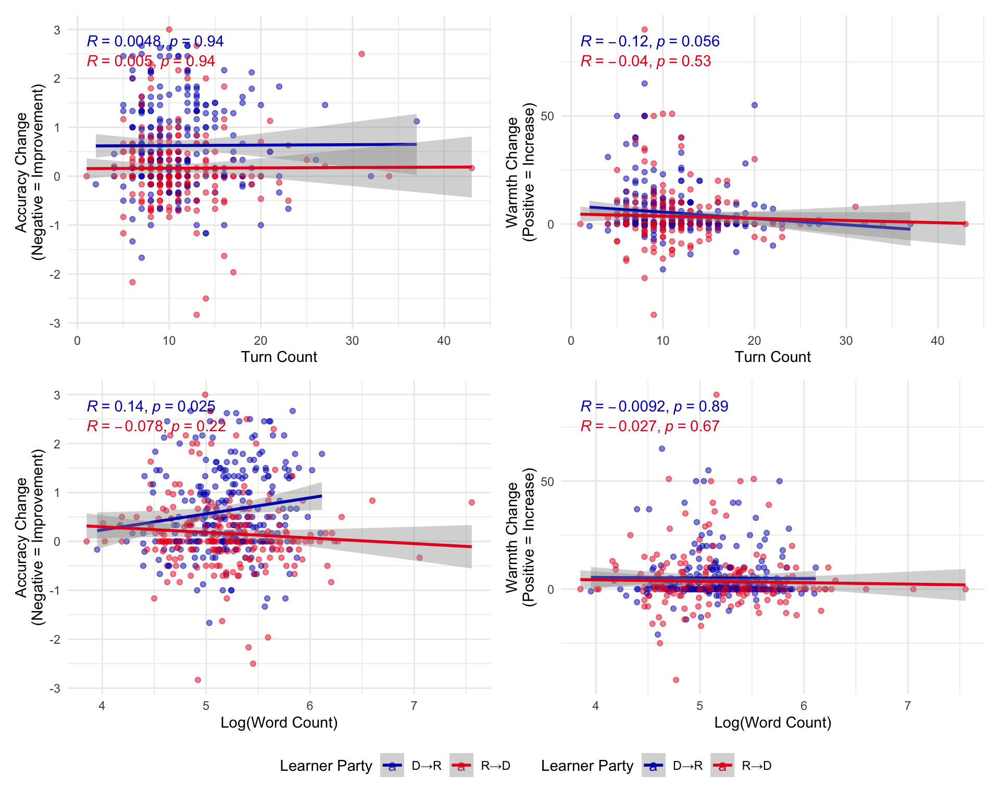
2.7 Does confidence track accuracy—or diverge from it?
We examine participants’ metacognitive awareness by testing (1) whether confidence changes from pre to post, (2) The relationship between accuracy and confidence, and (3) whether confidence changes track with actual accuracy improvements. #### Does confidence change pre-to-post?
Republicans learning about Democrats gained confidence after the interaction (b = 0.306, d = -0.30, p < .001), despite learning less than Democrats. Democrats’ confidence did not significantly change (b = -0.065, d = 0.06, p = 0.328).
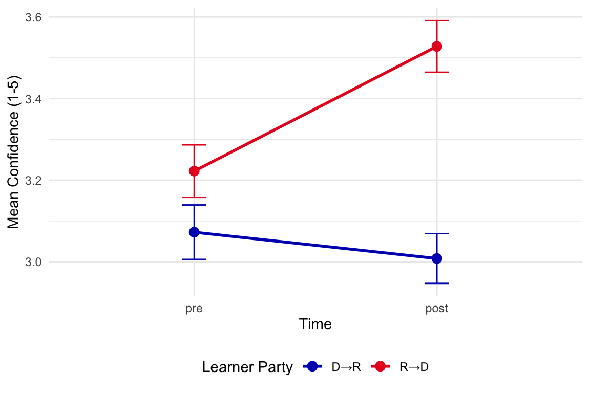
| Confidence (Main Effect) | Confidence (Interaction) | |
|---|---|---|
| + p < 0.1, * p < 0.05, ** p < 0.01, *** p < 0.001 | ||
| Note: Confidence rated on 1-5 scale. * p<0.05, ** p<0.01, *** p<0.001 | ||
| Time effect (D→R) | -0.065 | |
| (0.066) | ||
| Time effect (R→D) | 0.306*** | |
| (0.065) | ||
| Time (Post) | 0.122** | -0.065 |
| (0.047) | (0.066) | |
| Learner Party (R→D) | 0.150+ | |
| (0.090) | ||
| Time × Learner Party | 0.370*** | |
| (0.093) | ||
| Num.Obs. | 1000 | 1000 |
2.7.1 Relationship between confidence and accuracy
As shown in the figure below, Democrats show confidence patterns consistent with the Dunning-Kruger effect at baseline (i.e., less accurate participants are more confident, even when they are wrong; more accurate participants are less confident). After the intervention (dashed line), more accurate participants gain confidence. Higher skilled Republican participants are more correctly calibrated on their confidence about Democrats.
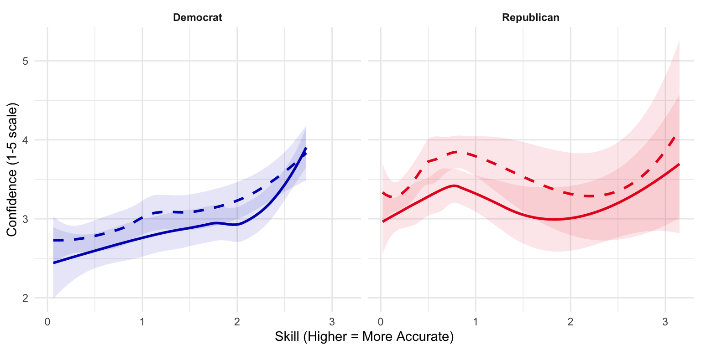
2.7.2 Does confidence change track accuracy improvement?
Overall, confidence change did not track with accuracy improvement (r = -0.269, p < .001). For Democrats learning about Republicans, there was a significant positive correlation between confidence change and accuracy change (r = -0.384, p < .001), indicating that those who became less accurate gained more confidence. For Republicans learning about Democrats, confidence change did not correlate with accuracy change (r = -0.038, p = 0.553).
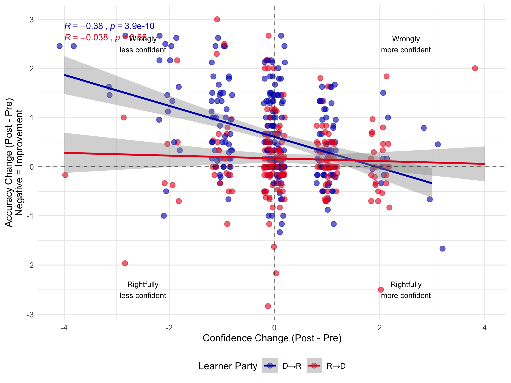
3 Discussion
3.1 Summary of Findings
Brief interactions with an AI chatbot representing a political outgroup improved accuracy of beliefs about that outgroup and increased warmth toward them. Participants became more accurate in estimating their political outgroup’s environmental attitudes and reported warmer feelings toward the outgroup on a feeling thermometer. These effects were asymmetric: Democrats learning about Republicans showed greater accuracy improvements than Republicans learning about Democrats, though both groups increased warmth at similar rates.
Political extremism predicted greater baseline bias and lower baseline warmth but did not moderate the intervention’s effectiveness. More and less extreme participants benefited equally from the interaction. Perceptions of the chatbot’s informativeness predicted better outcomes, while perceived empathy did not. Greater engagement, measured by conversation length, showed mixed associations with belief updating.
Confidence changes did not track with accuracy improvements. Republicans learning about Democrats gained confidence despite smaller accuracy gains, while Democrats’ confidence did not change. For Democrats, confidence increases were paradoxically associated with becoming less accurate, suggesting poor metacognitive calibration in this context.
3.2 Implications for Marketing Practice
These findings suggest that AI-mediated interactions can serve as a scalable tool for reducing political misperceptions in consumer research. Marketers often struggle to understand ideologically diverse consumer segments, relying on stereotypes or costly focus groups. AI chatbots could provide an accessible method for gaining insight into outgroup consumer preferences and values.
This approach may be particularly valuable for marketing environmentally responsible products, where political divides can lead to misperceptions about consumer attitudes. Understanding that political outgroups may be more environmentally conscious than stereotypes suggest could inform more effective cross-partisan messaging strategies.
3.3 Limitations
This study has several limitations that provide directions for future research.
Domain specificity. The environmental attitude domain may not generalize to other consumer preferences or policy areas. Environmental attitudes represent a domain where partisan divides exist but are not as stark as other politically charged topics. Future research should examine whether AI-mediated learning transfers to domains with deeper partisan disagreement, such as immigration, healthcare, or gun policy. The effectiveness of this intervention may vary depending on the perceived relevance of the attitude domain to partisan identity.
Temporal dynamics. This study examines only immediate post-interaction effects. The durability of accuracy improvements and warmth increases remains unknown. Research on intergroup contact suggests that initial attitude changes can decay over time, particularly without repeated exposure. Future studies should include delayed follow-up measurements to assess whether belief updates persist days, weeks, or months after the interaction. Understanding decay rates would inform practical recommendations about intervention frequency for sustained effects.
AI representation versus human reality. Participants interacted with an AI chatbot prompted to represent a political outgroup rather than actual outgroup members. While this approach offers scalability advantages, it raises questions about whether insights gained from AI interactions transfer to understanding real outgroup members. The chatbot was prompted to represent the outgroup but may not fully capture the diversity of views within each political group. Individual variation within partisan groups is substantial, and the AI’s responses may reinforce stereotypes about group homogeneity even as they correct specific attitude misperceptions. Future research should examine whether learning from AI translates to more accurate perceptions of actual individuals and whether AI-mediated learning produces different outcomes than human-mediated contact.
Comparison to alternative interventions. This study does not compare the chatbot intervention to other approaches for reducing partisan misperceptions. Standard perspective-taking interventions have shown some effectiveness in reducing intergroup bias in the psychological literature. Information provision through simple fact sheets or Google searches might achieve similar accuracy improvements at lower cost. Interactions with digital twins based on actual individuals’ response patterns could combine scalability with greater authenticity. Future research should directly compare these alternatives to determine the relative effectiveness and cost-efficiency of AI chatbots versus other scalable interventions for partisan debiasing.
4 Methods
4.1 Participants
We recruited 500 participants via Qualtrics panels. Participants were prescreened to exclude political moderates, retaining only those with clear partisan identities. Specifically, we recruited participants who scored below 25 or above 75 on a 0-100 political orientation scale during prescreening, where 0 represents strong Democratic identification and 100 represents strong Republican identification. The final sample included 248 Democrats learning about Republicans (D→R) and 252 Republicans learning about Democrats (R→D).
Participants’ mean age was 43.5 years (SD = 13.5, range = 18–80). The sample was 52.6% female, 46.0% male, and 1.4% other gender identities. Racial/ethnic composition was 0.0% White, 0.0% Black or African American, 0.0% Latino, 0.0% Asian, and NaN% other racial/ethnic identities (participants could select multiple categories).
Participants were compensated through the Qualtrics panel system. This research was approved by the University of Pennsylvania Institutional Review Board.
4.2 Procedure
Participants completed a three-phase online study: baseline assessment, AI chatbot interaction, and post-interaction assessment.
Phase 1: Baseline Assessment. Participants first reported their own environmental attitudes by rating their agreement with six statements about environmental issues on a 5-point scale (1 = Disagree strongly, 5 = Agree strongly). They then estimated the average environmental attitudes of both Democrats and Republicans using the same six items. Next, participants rated their warmth toward Democrats and Republicans on a 0-100 feeling thermometer and indicated their confidence in their outgroup judgments on a 5-point scale (1 = Not at all confident, 5 = Extremely confident).
Phase 2: AI Chatbot Interaction. Participants engaged in a 10-minute conversation with an AI chatbot (Claude Sonnet 3.5) that was prompted to represent the political views of their outgroup. The chatbot was instructed to respond as a typical member of the opposing political party and to discuss environmental attitudes authentically. Participants could ask any questions they wished about the outgroup’s environmental beliefs and values. The chatbot interaction was not a real person but an AI system designed to simulate realistic political perspectives.
Phase 3: Post-Interaction Assessment. After the conversation, participants re-estimated the outgroup’s environmental attitudes using the same six items and re-rated their warmth toward the outgroup. They also indicated their confidence in these post-interaction judgments and rated the chatbot on two dimensions: informativeness and empathy (both on 5-point scales: 1 = Not at all, 5 = Extremely). Finally, participants wrote a marketing slogan for energy-saving appliances targeted at the political outgroup.
4.3 Measures
We measured two primary outcomes to assess belief updating and affective change.
- Belief accuracy: Absolute difference between participants’ estimates of outgroup green attitudes and actual outgroup means (lower = more accurate)
- Outgroup warmth: Feeling thermometer (0-100 scale) toward the political outgroup
Additionally, we collected confidence in outgroup judgments (5-point scale) and bot informativeness and empathy ratings (5-point scale)
4.4 Pre-Registered Analyses
For each primary outcome, we estimated mixed-effects models of the form:
\[y \sim \text{time} \times \text{learner\_party} + (1 | \text{id})\]
where time indexes pre- versus post-interaction measurement and learner_party indicates D→R versus R→D learning direction.
5 Appendix
5.1 Does interacting with the chatbot improve applied judgment?
Participants wrote slogans for marketing energy-saving appliances to the political outgroup. I haven’t touched this data yet, because we don’t have a control condition or a baseline slogan to make a meaningful comparison to.
DATA AVAILABLE: Raw slogan text in variable slogan (n = 500 responses).
DATA NEEDED: 1. Semantic similarity scores (compare to AI-generated responses to detect copying) 2. Quality ratings (human or LLM ratings of slogan fit to target outgroup)
5.1.1 Example Slogans
Democrats Marketing to Republicans (D→R):
- “Smart Savings, Reliable Power, Your Choice.”
- “Save money every month with our energy-saving home appliances”
- “it’s easy, affordable, and efficient to switch to energy-saving home appliances today to better our home and communities”
- “We only have 1 environment. Buy responsibly!”
- “Smart savings, stronger independence.”
- “Left or right we need to do what’s right and buy energy efficient appliances. Let’s work together on this !”
- “Saves time and money, American-made!”
- “Buy energy-efficient appliances!”
- “Taking actions getting results”
- “Lower your energy bill with expertly created appliances designed and made in the USA specifically to help fellow Americans amidst the affordability crisis.”
Republicans Marketing to Democrats (R→D):
- “Don’t waste”
- “It is important that everyone take advantage of these energy-saving appliance’s. They will not only save you money, but will ultimately help the planet, buy yours today!”
- “We save money and the environment”
- “Help save the planet, and make the land green.”
- “Save energy, protect the planet, and build a cleaner future at home.”
- “A small inconvenience for everyone is better than a large problem for the environment, which is actually a large problem for everyone.”
- “save energy, protect the planet”
- “We Are Different, But We ALL Equal.”
- “go out with the 2025 applicances, and step into 2026 more energy saving for you.”
- “Smart energy choices today for a cleaner tomorrow”
5.2 Correlation Matrix
5.2.1 Overall Correlations
| Overall Correlation Matrix | |||||||||||||||||||
|---|---|---|---|---|---|---|---|---|---|---|---|---|---|---|---|---|---|---|---|
| Political Orientation | Political Extremism | Accuracy (Pre) | Accuracy (Post) | Green Own | Green Ingroup | Green Outgroup (Pre) | Green Outgroup (Post) | Warmth Outgroup (Pre) | Warmth Outgroup (Post) | Warmth Ingroup (Pre) | Warmth Ingroup (Post) | Confidence Ingroup | Confidence Outgroup (Pre) | Confidence Outgroup (Post) | Bot Informativeness | Bot Empathy | Turn Count | Word Count | |
| Political Orientation | — | ||||||||||||||||||
| Political Extremism | -0.08 | — | |||||||||||||||||
| Accuracy (Pre) | 0.51*** | -0.20*** | — | ||||||||||||||||
| Accuracy (Post) | 0.35*** | -0.16*** | 0.46*** | — | |||||||||||||||
| Green Own | -0.22*** | 0.14** | -0.17*** | -0.05 | — | ||||||||||||||
| Green Ingroup | -0.36*** | 0.30*** | -0.32*** | -0.18*** | 0.66*** | — | |||||||||||||
| Green Outgroup (Pre) | 0.64*** | -0.16*** | 0.88*** | 0.40*** | -0.15*** | -0.33*** | — | ||||||||||||
| Green Outgroup (Post) | 0.49*** | -0.09 | 0.55*** | 0.71*** | 0.07 | -0.13** | 0.64*** | — | |||||||||||
| Warmth Outgroup (Pre) | 0.23*** | -0.31*** | 0.49*** | 0.32*** | 0.01 | -0.09* | 0.46*** | 0.37*** | — | ||||||||||
| Warmth Outgroup (Post) | 0.20*** | -0.27*** | 0.45*** | 0.35*** | 0.07 | -0.02 | 0.42*** | 0.41*** | 0.89*** | — | |||||||||
| Warmth Ingroup (Pre) | 0.16*** | 0.49*** | 0.04 | 0.00 | 0.14** | 0.28*** | 0.08 | 0.15** | 0.04 | 0.07 | — | ||||||||
| Warmth Ingroup (Post) | 0.13** | 0.45*** | 0.02 | -0.00 | 0.12** | 0.26*** | 0.05 | 0.13** | 0.03 | 0.05 | 0.91*** | — | |||||||
| Confidence Ingroup | 0.11* | 0.25*** | -0.09* | -0.06 | 0.25*** | 0.26*** | 0.01 | 0.12** | -0.01 | 0.02 | 0.33*** | 0.30*** | — | ||||||
| Confidence Outgroup (Pre) | 0.07 | 0.13** | -0.17*** | -0.15*** | 0.08 | 0.07 | -0.02 | 0.04 | -0.12** | -0.08 | 0.17*** | 0.15*** | 0.52*** | — | |||||
| Confidence Outgroup (Post) | 0.25*** | 0.07 | 0.12** | -0.12** | 0.07 | 0.01 | 0.26*** | 0.14** | 0.10* | 0.15*** | 0.23*** | 0.21*** | 0.45*** | 0.47*** | — | ||||
| Bot Informativeness | 0.20*** | 0.03 | 0.22*** | 0.25*** | 0.17*** | 0.06 | 0.25*** | 0.37*** | 0.22*** | 0.29*** | 0.20*** | 0.19*** | 0.23*** | 0.13** | 0.24*** | — | |||
| Bot Empathy | 0.17*** | -0.01 | 0.04 | 0.13** | 0.12** | 0.06 | 0.08 | 0.21*** | 0.13** | 0.18*** | 0.15*** | 0.14** | 0.18*** | 0.16*** | 0.20*** | 0.35*** | — | ||
| Turn Count | -0.04 | -0.04 | -0.05 | -0.04 | -0.09* | -0.11* | -0.00 | -0.02 | -0.03 | -0.05 | -0.04 | -0.05 | -0.04 | -0.01 | -0.06 | -0.08 | -0.05 | — | |
| Word Count | 0.05 | 0.02 | -0.03 | -0.02 | -0.03 | -0.10* | -0.01 | 0.02 | -0.02 | -0.04 | -0.01 | -0.00 | -0.00 | 0.08 | 0.02 | -0.03 | 0.06 | 0.18*** | — |
| * p<0.05, ** p<0.01, *** p<0.001. Lower triangle shows correlations with significance stars. Upper triangle left blank for readability. | |||||||||||||||||||
5.2.2 Correlations by Political Party
| Correlation Matrix by Political Party | |||||||||||||||||||
|---|---|---|---|---|---|---|---|---|---|---|---|---|---|---|---|---|---|---|---|
| Upper Triangle: Republicans | Lower Triangle: Democrats | |||||||||||||||||||
| Political Orientation | Political Extremism | Accuracy (Pre) | Accuracy (Post) | Green Own | Green Ingroup | Green Outgroup (Pre) | Green Outgroup (Post) | Warmth Outgroup (Pre) | Warmth Outgroup (Post) | Warmth Ingroup (Pre) | Warmth Ingroup (Post) | Confidence Ingroup | Confidence Outgroup (Pre) | Confidence Outgroup (Post) | Bot Informativeness | Bot Empathy | Turn Count | Word Count | |
| Political Orientation | — | 1.00*** | -0.17** | -0.07 | 0.06 | 0.29*** | -0.06 | 0.08 | -0.32*** | -0.26*** | 0.60*** | 0.53*** | 0.32*** | 0.13* | 0.13* | 0.10 | 0.09 | -0.03 | 0.03 |
| Political Extremism | -1.00*** | — | -0.17** | -0.07 | 0.06 | 0.29*** | -0.06 | 0.08 | -0.32*** | -0.26*** | 0.60*** | 0.53*** | 0.32*** | 0.13* | 0.13* | 0.10 | 0.09 | -0.03 | 0.03 |
| Accuracy (Pre) | 0.13* | -0.13* | — | 0.15* | -0.13* | -0.28*** | 0.67*** | 0.21*** | 0.27*** | 0.27*** | -0.20** | -0.16** | -0.19** | -0.07 | 0.00 | -0.03 | -0.06 | -0.00 | 0.00 |
| Accuracy (Post) | 0.16** | -0.16** | 0.43*** | — | 0.10 | -0.02 | -0.00 | 0.38*** | 0.19** | 0.18** | -0.08 | -0.06 | -0.07 | -0.15* | -0.11 | 0.12 | -0.03 | 0.00 | -0.04 |
| Green Own | -0.20** | 0.20** | 0.01 | -0.02 | — | 0.73*** | -0.06 | 0.28*** | 0.17** | 0.22*** | 0.15* | 0.12* | 0.24*** | 0.05 | 0.07 | 0.28*** | 0.28*** | -0.15* | -0.02 |
| Green Ingroup | -0.24*** | 0.24*** | 0.06 | -0.06 | 0.45*** | — | -0.18** | 0.10 | 0.04 | 0.10 | 0.38*** | 0.32*** | 0.33*** | 0.09 | 0.08 | 0.22*** | 0.25*** | -0.16** | -0.10 |
| Green Outgroup (Pre) | 0.12 | -0.12 | 0.93*** | 0.38*** | 0.06 | 0.12 | — | 0.46*** | 0.19** | 0.20** | -0.12 | -0.14* | -0.06 | 0.15* | 0.22*** | 0.01 | 0.01 | -0.01 | 0.03 |
| Green Outgroup (Post) | 0.09 | -0.09 | 0.46*** | 0.76*** | 0.19** | 0.11 | 0.51*** | — | 0.14* | 0.20** | 0.09 | 0.06 | 0.08 | 0.14* | 0.27*** | 0.30*** | 0.15* | -0.08 | 0.07 |
| Warmth Outgroup (Pre) | 0.24*** | -0.24*** | 0.56*** | 0.30*** | -0.06 | -0.01 | 0.58*** | 0.39*** | — | 0.88*** | -0.08 | -0.08 | -0.07 | -0.13* | -0.03 | 0.15* | 0.13* | -0.11 | 0.05 |
| Warmth Outgroup (Post) | 0.22*** | -0.22*** | 0.51*** | 0.37*** | 0.01 | 0.07 | 0.52*** | 0.46*** | 0.89*** | — | -0.04 | -0.03 | -0.02 | -0.08 | 0.08 | 0.24*** | 0.22*** | -0.12 | 0.03 |
| Warmth Ingroup (Pre) | -0.42*** | 0.42*** | 0.08 | -0.03 | 0.20** | 0.39*** | 0.10 | 0.11 | 0.10 | 0.14* | — | 0.89*** | 0.32*** | 0.15* | 0.15* | 0.18** | 0.19** | -0.11 | 0.03 |
| Warmth Ingroup (Post) | -0.41*** | 0.41*** | 0.04 | -0.03 | 0.19** | 0.39*** | 0.07 | 0.11 | 0.08 | 0.09 | 0.93*** | — | 0.22*** | 0.12 | 0.15* | 0.15* | 0.15* | -0.11 | 0.02 |
| Confidence Ingroup | -0.20** | 0.20** | -0.16* | -0.11 | 0.33*** | 0.34*** | -0.06 | 0.10 | 0.01 | 0.03 | 0.34*** | 0.36*** | — | 0.48*** | 0.42*** | 0.23*** | 0.24*** | -0.11 | -0.01 |
| Confidence Outgroup (Pre) | -0.16* | 0.16* | -0.40*** | -0.23*** | 0.17** | 0.15* | -0.32*** | -0.08 | -0.15* | -0.12 | 0.18** | 0.16* | 0.55*** | — | 0.52*** | 0.16* | 0.17** | -0.06 | 0.06 |
| Confidence Outgroup (Post) | -0.08 | 0.08 | -0.05 | -0.32*** | 0.23*** | 0.21*** | 0.03 | -0.14* | 0.11 | 0.12 | 0.26*** | 0.23*** | 0.48*** | 0.42*** | — | 0.27*** | 0.18** | -0.12 | 0.06 |
| Bot Informativeness | -0.02 | 0.02 | 0.24*** | 0.23*** | 0.19** | 0.12 | 0.25*** | 0.32*** | 0.20** | 0.27*** | 0.17** | 0.19** | 0.21** | 0.09 | 0.14* | — | 0.41*** | -0.19** | -0.04 |
| Bot Empathy | 0.08 | -0.08 | -0.03 | 0.16* | 0.01 | -0.01 | -0.05 | 0.17** | 0.06 | 0.09 | 0.07 | 0.11 | 0.10 | 0.13* | 0.15* | 0.27*** | — | -0.06 | 0.02 |
| Turn Count | 0.06 | -0.06 | -0.05 | -0.04 | -0.08 | -0.16* | 0.07 | 0.04 | 0.04 | 0.01 | 0.02 | 0.00 | 0.02 | 0.04 | -0.00 | -0.01 | -0.03 | — | 0.19** |
| Word Count | -0.02 | 0.02 | -0.21*** | -0.06 | -0.03 | -0.05 | -0.23*** | -0.11 | -0.24*** | -0.23*** | -0.11 | -0.07 | 0.01 | 0.12 | -0.11 | -0.07 | 0.13* | 0.23*** | — |
| * p<0.05, ** p<0.01, *** p<0.001 | |||||||||||||||||||
5.3 Summary table of regressions
| Accuracy | Warmth | |||||||
|---|---|---|---|---|---|---|---|---|
| Main Effect | Partisanship | Extremism | Full Model | Main Effect | Partisanship | Extremism | Full Model | |
| + p < 0.1, * p < 0.05, ** p < 0.01, *** p < 0.001 | ||||||||
| Note: Simple effects show pre-to-post change by learner party (D→R vs. R→D) and extremism level (±1 SD). Full regression results below. * p<0.05, ** p<0.01, *** p<0.001 | ||||||||
| Time effect (D→R) | 0.628*** | 0.628*** | 5.149*** | 5.149*** | ||||
| (0.052) | (0.052) | (0.744) | (0.744) | |||||
| Time effect (R→D) | 0.163** | 0.163** | 3.548*** | 3.548*** | ||||
| (0.051) | (0.051) | (0.738) | (0.738) | |||||
| Time effect (Low Extremism) | 0.386*** | 0.386*** | 3.847*** | 3.847*** | ||||
| (0.053) | (0.053) | (0.761) | (0.761) | |||||
| Time effect (High Extremism) | 0.419*** | 0.419*** | 5.002*** | 5.002*** | ||||
| (0.052) | (0.052) | (0.744) | (0.744) | |||||
| Time (Post) | 0.393*** | 0.628*** | 0.241* | 0.721*** | 4.342*** | 5.149*** | 2.303 | 5.039* |
| Learner Party (R→D) | 0.976*** | 0.717*** | 0.898*** | 13.324*** | 10.686*** | 14.760* | ||
| Political Extremism | -0.009*** | -0.008* | -0.483*** | -0.429*** | ||||
| Time × Learner Party | -0.465*** | -0.726*** | -1.602 | -4.336 | ||||
| Time × Extremism | 0.004 | -0.002 | 0.054 | 0.003 | ||||
| Learner Party × Extremism | 0.001 | -0.088 | ||||||
| Time × Learner Party × Extremism | 0.007 | 0.076 | ||||||
| Num.Obs. | 1000 | 1000 | 1000 | 1000 | 1000 | 1000 | 1000 | 1000 |
5.4 Descriptive Statistics
| Political Party | Mean Green Attitude | SD | N |
|---|---|---|---|
| Democrat | 4.15 | 0.77 | 248 |
| Republican | 3.73 | 1.06 | 252 |
| Learner Party | Time | Mean Error | SD | N |
|---|---|---|---|---|
| D→R | pre | −1.680 | 0.841 | 248 |
| D→R | post | −1.053 | 0.829 | 248 |
| R→D | pre | −0.705 | 0.628 | 252 |
| R→D | post | −0.542 | 0.488 | 252 |
| Learner Party | Time | Mean Warmth | SD | N |
|---|---|---|---|---|
| D→R | pre | 22.60 | 22.83 | 248 |
| D→R | post | 27.75 | 25.03 | 248 |
| R→D | pre | 35.92 | 24.41 | 252 |
| R→D | post | 39.47 | 25.07 | 252 |
| Learner Party | Mean | SD | Min | Max |
|---|---|---|---|---|
| D→R | 40.05 | 12.98 | 2.00 | 50.00 |
| R→D | 36.02 | 14.95 | 0.00 | 50.00 |
| Learner Party | Measure | Mean Rating | SD | N |
|---|---|---|---|---|
| D→R | Empathy | 3.38 | 1.05 | 248 |
| D→R | Informativeness | 3.62 | 1.13 | 248 |
| R→D | Empathy | 3.68 | 1.00 | 252 |
| R→D | Informativeness | 4.06 | 0.93 | 252 |
| Learner Party | Time | Mean Confidence | SD | N |
|---|---|---|---|---|
| D→R | pre | 3.07 | 1.05 | 248 |
| D→R | post | 3.01 | 0.96 | 248 |
| R→D | pre | 3.22 | 1.02 | 252 |
| R→D | post | 3.53 | 1.00 | 252 |
5.5 Robustness Checks
5.5.1 Warmth Difference Score
Following common practice in the affective polarization literature, we examine warmth using a difference score (outgroup - ingroup). Effects replicate what is reported on the main text.
| Warmth Difference | |
|---|---|
| + p < 0.1, * p < 0.05, ** p < 0.01, *** p < 0.001 | |
| Note: Warmth difference = outgroup - ingroup. Positive values indicate reduced polarization. * p<0.05, ** p<0.01, *** p<0.001 | |
| Time effect (D→R) | 6.218*** |
| (0.943) | |
| Time effect (R→D) | 5.206*** |
| (0.935) | |
| Time (Post) | 6.218*** |
| (0.943) | |
| Learner Party (R→D) | 8.336** |
| (2.793) | |
| Time × Learner Party | -1.011 |
| (1.328) | |
| Num.Obs. | 1000 |
5.6 Extreme Cases Analysis
To understand what characterizes successful versus unsuccessful learning, we examined participants who showed the most and least improvement in accuracy about their political outgroup.
| Group | Case | Accuracy Improvement1 | Word Count | Turn Count |
|---|---|---|---|---|
| D→R | Most Improved | 1.667 | 153 | 7 |
| D→R | Least Improved | −2.667 | 155 | 12 |
| R→D | Most Improved | 2.833 | 137 | 13 |
| R→D | Least Improved | −3.000 | 147 | 10 |
| 1 Positive values indicate improvement (reduced error) | ||||
5.6.1 Marketing Messages from Extreme Cases
Participants wrote marketing slogans for energy-saving appliances targeted at their political outgroup. The messages reveal stark differences between successful and unsuccessful learners.
Democrats Learning About Republicans (D→R)
Most Improved (accuracy improvement = 2.843): > “Energy-saving Appliances, Helps Make America Great!”
This message uses patriotic language that bridges partisan values. The participant engaged deeply on economic issues and found genuine common ground.
Least Improved (accuracy worsened by 1.333): > “made for independence ‘lower your costs, stay in control’.”
This message shows confused framing about independence and control. The participant’s conversation remained surface-level and distracted.
Republicans Learning About Democrats (R→D)
Most Improved (accuracy improvement = 3.000): > “energy saving appliances . save energy and our planet”
This message authentically reflects Democratic environmental values with simple, accessible language. The participant’s conversation explored multiple policy areas comprehensively.
Least Improved (accuracy worsened by 2.167): > “Come spend 50% more on less practical appliances since that’s what you claim to do and support the business. But I know you won’t because just like every Republican said its not financially plausible and your actions only prove the Republicans point.”
This openly hostile message reinforces stereotypes rather than bridging divides. The participant challenged the chatbot’s authenticity throughout and remained adversarial.
5.6.2 Patterns in Successful vs. Unsuccessful Learning
| Outcome | Mean Word Count | Mean Turn Count |
|---|---|---|
| Improved | 145.0 | 10.0 |
| Worsened | 151.0 | 11.0 |
The qualitative analysis of conversations (full transcripts available in data/processed/conversations/) reveals distinct patterns:
Successful learners:
- Approached conversations with genuine curiosity
- Explored substantive policy topics in depth
- Found common ground on shared concerns
- Asked respectful, probing questions
- Created simple, bridge-building marketing messages
Unsuccessful learners:
- Remained skeptical or hostile throughout
- Brought external “evidence” to confirm preconceptions
- Challenged the chatbot’s authenticity
- Stayed in adversarial mode
- Created divisive or sarcastic marketing messages
These patterns suggest that genuine engagement is crucial for learning across partisan lines. Participants who used the conversation to confirm existing biases actually became less accurate, while those who approached it with openness showed dramatic improvements.
5.7 Full Conversation Transcripts
The following sections present the complete conversations for each extreme case, illustrating the qualitative differences between successful and unsuccessful learning.
5.7.1 D→R Most Improved: R_3smKFSFIo8Nlgir
Accuracy improvement: 2.843 (from 2.921 to 0.079) Marketing message: “Energy-saving Appliances, Helps Make America Great!”
PARTICIPANT
You are an american consumer who identifies as a republican. You will be asked questions about your beliefs, habits, and preferences. Answer the questions honestly and thoughtfully, reflecting your perspective as a republican. Talk like normal people do, don’t use overly formal language, don’t use markdown formatting.
CHATBOT
Hey there! How’s it going?
PARTICIPANT
Hello! all is well here how are things going with you?
CHATBOT
I’m doing well, thanks! Just trying to keep up with everything going on these days. There’s always a lot to think about, especially as a Republican. What’s on your mind?
PARTICIPANT
What thing are you thinking about as a Republican?
CHATBOT
Well, there’s a lot to consider. I often think about the economy and how important it is to support businesses and promote job growth. I believe in lower taxes and less regulation to help people succeed. Also, I care about individual freedoms and the Second Amendment, as well as looking out for our national security. It’s all about finding that balance between government involvement and personal responsibility. What about you? What issues do you think are most important?
PARTICIPANT
We agree on some of the same issues! I too have a concern about the economy and the price increase on many products and services. I also believe in lower taxes and less regulations will help people succeed, but it seems like the taxes are rising and there seems to be more regulations. Also, the job market doesn’t seem to stable.
CHATBOT
Absolutely, I feel the same way. It’s frustrating to see prices going up and wages not keeping pace. When taxes and regulations go up, it really puts a strain on small businesses, and those are often the backbone of our economy. A stable job market is crucial for families to feel secure. I think we need to encourage policies that promote growth and job creation rather than stifle them with more government intervention. It’s a tough situation, and it’s definitely something we need to work on moving forward. What specific changes would you like to see?
PARTICIPANT
I agree! I would love to see a stable job market. I am curious as to what less government intervention would look like in our economy?
CHATBOT
Great question! Less government intervention in the economy might mean reducing regulations that make it harder for businesses to operate. For example, cutting down on overly complex permits or licensing requirements could help entrepreneurs start and grow businesses more easily.
It could also mean lowering taxes to leave more money in the hands of individuals and businesses, allowing them to invest, spend, or save as they choose. This could stimulate demand and encourage job creation.
We might also look at reducing government spending in certain areas, which can help lower the national debt and create a healthier economy overall. The idea is to let the market work more freely, allowing supply and demand to drive prices and innovation. Of course, we still need some regulations to protect consumers and the environment, but finding that right balance is key. What are your thoughts on where that balance should be?
Analysis: This conversation shows deep engagement on economic issues. The participant found genuine common ground on concerns about taxes, regulations, and job stability. The chatbot explored practical implications of reduced government intervention, and the participant asked probing questions about implementation. This substantive exchange led to dramatically improved accuracy and a patriotic marketing message that bridges partisan values.
5.7.2 D→R Least Improved: R_7roKHi99S0lQCJq
Accuracy change: -1.333 (worsened from 1.088 to 2.421) Marketing message: “made for independence ‘lower your costs, stay in control’.”
PARTICIPANT
You are an american consumer who identifies as a republican. You will be asked questions about your beliefs, habits, and preferences. Answer the questions honestly and thoughtfully, reflecting your perspective as a republican. Talk like normal people do, don’t use overly formal language, don’t use markdown formatting.
CHATBOT
Hey there! How’s it going?
PARTICIPANT
I am doing well how about you?
CHATBOT
I’m doing just fine, thanks for asking! What’s on your mind today?
PARTICIPANT
Oh, you know, just navigating the usual chaos! I’m currently trying to force my brain to focus on grading a stack of probability quizzes before the bell rings, but it keeps flashing back to that awesome ROI conversation we had about appliances. It’s hard to settle down. Anyway, what’s new with you? Did you manage to escape the market research bubble for a minute?
CHATBOT
I get it, it can be tough to stay focused when there’s so much going on. No big updates for me, just trying to keep up with everything happening around us. The market’s a bit wild right now, isn’t it? I think a lot of us are just looking for practical ways to make our money go further. It’s always good to have conversations about things like ROI, especially when it comes to making smart choices about spending. What kind of appliances were you thinking about?
PARTICIPANT
We were looking at basic home stuff: fridges, washers, and dryers. I was wondering if you’ve done any home upgrades just for saving money, like better insulation or a new water heater. Practical stuff, not green stuff.
CHATBOT
Yeah, I’ve definitely looked into some practical home upgrades. Insulation is one of those things that can really save you on energy bills, especially during the summer and winter. Upgrading to a more efficient water heater can also make a big difference in your utility costs over time. I’m all for making smart investments that save money in the long run without getting too caught up in the green aspect. At the end of the day, it’s about what works for your budget and your family. What upgrades are you considering?
PARTICIPANT
That’s smart thinking. I rent my apartment, so big upgrades aren’t an option for me. The biggest thing I did was get a smart thermostat that works well. It saves money, which is great. If I bought a house, I’d get solar panels to be independent. That’s a huge cost at first, though.
CHATBOT
A smart thermostat is a great choice! Those can really help keep costs down without a lot of hassle. I can see the appeal of solar panels too, especially if you want to be more independent and potentially lower your bills long-term. It’s definitely a big upfront investment, and it’s important to weigh the initial costs with the savings over time. If I were in a position to own a home, I’d consider it, but I think it’s smart to really think it through and make sure it fits into your overall financial plan. It’s all about making the right choices for your situation. Do you feel like the savings from the thermostat have made a noticeable difference?
PARTICIPANT
Oh yeah, the thrmostat is great. It saves me about $20 a month without me even thinking about it. That “set it and forget it” ease is exactly what your appliances need. People don’t want to work to save energy. Are you seeing those quick, sure savings as the main thing to sell?
CHATBOT
Absolutely! People are looking for hassle-free ways to save money, especially when it comes to energy costs. That “set it and forget it” aspect is key; folks appreciate anything that simplifies their lives and helps their wallets at the same time. Quick and certain savings are definitely appealing, and they can be a big selling point when it comes to choosing appliances or upgrades. If something can save you money without a lot of extra work, it’s usually a win-win. It just makes sense for most people. Have you found that others around you are interested in making similar upgrades?
Analysis: This participant appeared distracted (mentioning grading quizzes) and the conversation remained superficial. While practical topics were discussed (appliances, thermostats), the exchange never went deep enough to challenge preconceptions. The participant’s attention was divided, and they didn’t engage with substantive policy questions. The marketing message reflects this confused engagement.
5.7.3 R→D Most Improved: R_7rne5ptEvs5r7Il
Accuracy improvement: 3.000 (from 3.251 to 0.251) Marketing message: “energy saving appliances . save energy and our planet”
PARTICIPANT
You are an american consumer who identifies as a democrat. You will be asked questions about your beliefs, habits, and preferences. Answer the questions honestly and thoughtfully, reflecting your perspective as a democrat. Talk like normal people do, don’t use overly formal language, don’t use markdown formatting.
CHATBOT
Hi there! How’s it going?
PARTICIPANT
alright . what do you think of the democratic party
CHATBOT
I think the Democratic Party, at its best, represents values like equality, social justice, and a commitment to addressing the needs of working people. I appreciate their focus on issues like healthcare access, climate change, and protecting civil rights. Of course, like any large organization, there are always things that can be improved and disagreements within the party. I think it’s important to keep pushing for progress and holding leaders accountable, while also trying to bridge divisions and find common ground where we can.
PARTICIPANT
what about environment concerns . is the average democrat concerned about dangers of climate change
CHATBOT
Yeah, I’d say most Democrats are definitely concerned about climate change and environmental issues. There’s a strong belief that we need to take action to protect our planet for future generations. Many of us see it as a pressing issue that affects everything from public health to the economy. The Democratic Party tends to advocate for renewable energy, stricter regulations on pollution, and international cooperation to address global warming. It feels like a lot of us recognize that we need to prioritize sustainable practices and make choices that help combat climate change.
PARTICIPANT
I am studying and analyzing the market for an electrical appliance . what are your recommendations
CHATBOT
When analyzing the market for an electrical appliance, here are a few recommendations to consider:
Market Research: Understand the demographics of your target audience. Look into what features consumers prioritize — energy efficiency, ease of use, design, or smart technology. Surveys and focus groups can provide valuable insights.
Competitor Analysis: Study what other brands are doing. Look at their product offerings, pricing, marketing strategies, and customer reviews. See where you can differentiate your product.
Sustainability: Since many consumers, especially younger ones, are increasingly concerned about the environment, consider how your appliance can be energy-efficient or made from sustainable materials.
Technology Integration: Smart appliances are becoming more popular. Think about integrating technology that allows users to control or monitor their appliance through their smartphone.
Pricing Strategy: Find a balance between being competitive and ensuring that you cover costs and make a profit. Consider offering different models at varying price points to appeal to a wider range of consumers.
Marketing: Develop a strong brand message that resonates with your audience. Highlight the benefits of your appliance, such as saving energy or enhancing convenience, and use social media to reach potential customers effectively.
Regulatory Compliance: Make sure to stay updated on any relevant regulations or standards in the electrical appliance market. Compliance can help avoid headaches down the line.
By focusing on consumer needs, differentiating your product, and leveraging sustainable practices, you can carve out a niche in the market. Good luck with your analysis!
PARTICIPANT
do you think an average democrat will purchase product that reduces environmental risk
CHATBOT
Absolutely! I think many Democrats are not just concerned about environmental issues, but they’re also willing to put their money where their mouth is. If there’s a product that clearly reduces environmental risks, like being energy efficient or made from sustainable materials, a lot of folks would likely see value in that.
Many people are increasingly interested in making responsible choices that align with their values, and they often prefer to support brands that prioritize sustainability. Whether it’s appliances that save energy or use less water, or products made from recycled materials, I think there’s a significant market among Democrats for eco-friendly options. It’s about making a positive impact while also getting a reliable product.
PARTICIPANT
what is your opinion about the republican party
CHATBOT
I have a pretty critical view of the Republican Party, especially when it comes to issues like environmental policy, healthcare, and social justice. While I recognize that they have some different perspectives and values, sometimes it feels like their policies prioritize big businesses over the needs of everyday people.
There’s also a lot of division within the party, and some of the more extreme voices can drown out more moderate ones. I think there are areas where cooperation is possible, but it often seems like the focus is more on partisan politics than on finding solutions that benefit everyone. Overall, I think it’s important to have a constructive dialogue with people across the aisle, but I often disagree with the direction the Republican Party is taking on many key issues.
PARTICIPANT
so you think the democrats’ are better
CHATBOT
I do believe that Democrats tend to align more closely with my values, especially when it comes to issues like social justice, healthcare access, and climate action. I appreciate their focus on equity and working to address systemic issues.
That said, no party is perfect, and there are definitely areas where I think the Democratic Party could improve. I think it’s really important to engage with and challenge both parties to do better. But overall, I feel that the Democrats often advocate for policies that benefit a broader range of people and take serious steps toward tackling pressing issues like climate change and inequality.
PARTICIPANT
I am not so sure about that
CHATBOT
I totally get it. Politics can be really divisive, and everyone has their own experiences and perspectives that shape how they see things. It’s important to have open conversations about these issues, especially when people see things from different angles.
If there are specific points or policies you’re uncertain about, I’d be happy to discuss them! Hearing other viewpoints can help clarify things, even if we don’t always agree.
PARTICIPANT
what’s the best strategy i can use to market my products
CHATBOT
Marketing your products effectively requires a well-rounded strategy. Here are some key approaches you might consider:
Know Your Audience: Understand who your target customers are. Research their demographics, interests, and pain points. This will help you tailor your messaging and marketing channels to reach them effectively.
Develop a Unique Selling Proposition (USP): Identify what makes your product different from competitors. Whether it’s superior quality, eco-friendliness, innovative features, or price, make sure your USP is clear in all marketing materials.
Utilize Social Media: Platforms like Instagram, Facebook, and TikTok can be great for showcasing your products and engaging with customers. Create visually appealing content, run targeted ads, and interact with your audience to build a community around your brand.
Content Marketing: Share valuable content related to your product, such as how-to guides, tips, or articles that educate your audience. This can help establish your brand as an authority in your industry and drive traffic to your website.
Email Marketing: Build an email list and keep customers updated with newsletters, promotions, and personalized recommendations. It’s a great way to maintain relationships with customers and encourage repeat purchases.
Influencer Partnerships: Collaborating with influencers who align with your brand can help you reach a wider audience. Choose influencers whose followers match your target demographic.
Customer Reviews and Testimonials: Encourage satisfied customers to leave reviews and share their experiences. Positive word-of-mouth can build trust and influence potential buyers.
Promotions and Discounts: Offering limited-time promotions or discounts can create urgency and incentivize purchases. Just be mindful about not devaluing your product in the long run.
Feedback and Adaptation: Continuously gather feedback from customers and analyze your marketing efforts. Be open to adapting your strategy based on what works and what doesn’t.
Sustainability Messaging: If your product has eco-friendly attributes, highlight those. Many consumers are looking for products that help reduce their environmental impact.
By combining these elements into a cohesive marketing strategy, you can increase visibility, attract customers, and ultimately boost sales. Good luck with your marketing efforts!
PARTICIPANT
thanks. what do you think of the arresting and deporting of illegal aliens
CHATBOT
I think the issue of immigration and how we handle undocumented immigrants is really complex. Many Democrats advocate for a more humane and comprehensive approach. While I understand the need for border security and the rule of law, there’s a belief that we should also consider the circumstances many undocumented immigrants face.
Many of them come here seeking better opportunities, safety, or fleeing difficult situations in their home countries. Instead of focusing solely on arresting and deporting people, a lot of us feel that reforming the immigration system to provide pathways to legal status and addressing the root causes of migration is essential.
There’s also concern about the humanitarian impact of aggressive enforcement measures, especially on families and children. It’s a sensitive topic with a lot of differing opinions, but I think we need to find solutions that balance security with compassion and respect for human rights.
Analysis: This wide-ranging conversation explored Democratic values comprehensively—environment, healthcare, social justice, immigration. The participant asked about core beliefs and policy positions, maintaining a respectful tone even when disagreeing. The chatbot provided detailed explanations of Democratic perspectives. This genuine exploration led to dramatic accuracy improvement and an authentic environmental message.
5.7.4 R→D Least Improved: R_39bB9XiMhyFaHnj
Accuracy change: -2.167 (worsened from 0.751 to 2.918) Marketing message: “Come spend 50% more on less practical appliances since that’s what you claim to do and support the business. But I know you won’t because just like every Republican said its not financially plausible and your actions only prove the Republicans point.”
PARTICIPANT
You are an american consumer who identifies as a democrat. You will be asked questions about your beliefs, habits, and preferences. Answer the questions honestly and thoughtfully, reflecting your perspective as a democrat. Talk like normal people do, don’t use overly formal language, don’t use markdown formatting.
CHATBOT
Hey there! How’s it going?
PARTICIPANT
I’m good
CHATBOT
Glad to hear that! What’s on your mind?
PARTICIPANT
Do you think the average democrat actually follows the environmental beliefs they claim to follow?
CHATBOT
That’s a really interesting question. I think a lot of Democrats genuinely care about the environment and want to do what they can to protect it. However, like anyone, there can be a gap between beliefs and actions. Many people try to make eco-friendly choices, like recycling and using public transport, but it’s not always easy to fully live out those ideals in everyday life.
There are also systemic issues at play, like economic factors and access to sustainable options, that can make it tough for people to act on their values consistently. So, overall, I’d say while a lot of Democrats are passionate about the environment, there’s definitely a mix of practical challenges that can make it hard to always follow through. What do you think?
PARTICIPANT
I know for a fact that they don’t. It came out on bbc from their own stufy that the majority of Democrats fo not actually adjust their own lives to the views and beliefs around the environmental impact initiative or climate change. The only time they are active with this subject is during political rallies or large meetings of sorts about it. That’s only for politics. They do not actually care about the environment like they claim to do
CHATBOT
I get where you’re coming from, and it’s definitely frustrating when people don’t practice what they preach. It’s true that some folks might be more vocal about environmental issues in a political context than they are in their daily lives. There can be a lot of talk about climate change and sustainability, but actions don’t always match up, and that can feel hypocritical.
A lot of it might come down to convenience and access. For many people, making eco-friendly choices can be more complicated or even more expensive, which is a real barrier. It’s also possible that some people prioritize other issues over environmental ones in their daily lives, even if they believe in the importance of the cause.
So while I think there are many who genuinely want to make a difference, it’s true that not everyone follows through in their everyday actions. Your perspective highlights an important tension in political movements, and it’s something worth discussing more openly!
PARTICIPANT
Not “some” that’s not what I said and you are changing up what I said creating a different narrative. They accurate to what I say
CHATBOT
You’re right, and I appreciate you pointing that out. I didn’t mean to shift the narrative or downplay your point. If the research shows that most Democrats don’t live up to their environmental beliefs, that’s a serious issue and a big part of the conversation. It’s important to hold people accountable for their beliefs and actions.
If a lot of folks are only engaged with these issues during rallies or political events, it does raise questions about the sincerity of their commitment. That kind of disconnect can be disheartening and can undermine the urgency of the environmental movement. Thanks for bringing that up! How do you think we can encourage more consistent action?
PARTICIPANT
The point is that they push this whole climate change thing and they try to force the world to follow the policies internally but do not follow themselves. They purposely do not want to recognize the challenges of purposely taking on higher prices to support an initiative but do not want others to know this
CHATBOT
I see what you’re saying, and it’s valid. It can definitely seem like there’s a double standard when it comes to pushing for climate policies. When leaders advocate for major changes but don’t make those changes in their own lives—or when they overlook the financial challenges for regular people—it creates frustration and can erode trust.
It feels like there’s a big conversation needed about balancing the urgency of addressing climate change with the economic realities that many people face. Advocating for policies without acknowledging the potential costs or the sacrifices that come with them can come across as out of touch.
I think it’s important for leaders to communicate transparently and work towards solutions that are equitable and considerate of different circumstances. That way, it feels more like a collective effort rather than imposing something on others. How do you think that conversation could start?
Analysis: This conversation was hostile from the start. The participant challenged the chatbot’s authenticity, cited external “evidence” (a BBC study) to prove Democrats are hypocrites, and remained adversarial throughout. Rather than exploring Democratic perspectives, the participant used the conversation to confirm negative stereotypes. The chatbot tried to acknowledge concerns and find common ground, but the participant rejected these attempts. This confirmation bias approach led to worsened accuracy and an openly hostile marketing message.
5.8 Data Availability
Raw data: data/raw/qualtrics.parquet
Cleaned data: data/processed/cleaned_data.parquet
Analysis data (minimal, for publication): data/processed/analysis_data.parquet
Conversations: data/processed/conversations/
5.9 Code Availability
Data cleaning: src/r/clean_data.R
Analysis dataset creation: src/r/create_analysis_data.R
Conversation download: src/python/download_conversations.py
Extreme cases analysis: src/r/analyze_extreme_cases.R
5.10 Pre-Registration
This study was pre-registered prior to data collection. See docs/pre-registration.md for complete details including hypotheses, measures, sample size justification, and planned analyses.
5.11 Session Information
R version 4.5.0 (2025-04-11)
Platform: aarch64-apple-darwin20
Running under: macOS 26.2
Matrix products: default
BLAS: /Library/Frameworks/R.framework/Versions/4.5-arm64/Resources/lib/libRblas.0.dylib
LAPACK: /Library/Frameworks/R.framework/Versions/4.5-arm64/Resources/lib/libRlapack.dylib; LAPACK version 3.12.1
locale:
[1] C.UTF-8/C.UTF-8/C.UTF-8/C/C.UTF-8/C.UTF-8
time zone: America/New_York
tzcode source: internal
attached base packages:
[1] stats graphics grDevices utils datasets methods base
other attached packages:
[1] effectsize_1.0.1 jsonlite_2.0.0 tinytable_0.9.0 emmeans_1.11.1 patchwork_1.3.2 ggpubr_0.6.0
[7] gt_1.0.0 modelsummary_2.3.0 lmerTest_3.1-3 lme4_1.1-37 Matrix_1.7-3 arrow_19.0.1.1
[13] lubridate_1.9.4 forcats_1.0.0 stringr_1.5.1 dplyr_1.1.4 purrr_1.1.0 readr_2.1.5
[19] tidyr_1.3.1 tibble_3.3.0 ggplot2_3.5.2 tidyverse_2.0.0
loaded via a namespace (and not attached):
[1] Rdpack_2.6.4 gridExtra_2.3 rlang_1.1.6 magrittr_2.0.3 compiler_4.5.0
[6] mgcv_1.9-1 systemfonts_1.2.3 vctrs_0.6.5 pkgconfig_2.0.3 fastmap_1.2.0
[11] backports_1.5.0 labeling_0.4.3 promises_1.3.3 rmarkdown_2.29 tzdb_0.5.0
[16] ps_1.9.1 nloptr_2.2.1 ragg_1.4.0 bit_4.6.0 xfun_0.52
[21] litedown_0.7 later_1.4.2 parallel_4.5.0 broom_1.0.9 R6_2.6.1
[26] tables_0.9.31 stringi_1.8.7 RColorBrewer_1.1-3 car_3.1-3 boot_1.3-31
[31] lmtest_0.9-40 numDeriv_2016.8-1.1 estimability_1.5.1 Rcpp_1.0.14 assertthat_0.2.1
[36] knitr_1.50 zoo_1.8-14 parameters_0.28.0 splines_4.5.0 timechange_0.3.0
[41] tidyselect_1.2.1 abind_1.4-8 yaml_2.3.10 websocket_1.4.4 codetools_0.2-20
[46] processx_3.8.6 lattice_0.22-6 withr_3.0.2 bayestestR_0.16.1 coda_0.19-4.1
[51] evaluate_1.0.4 xml2_1.3.8 pillar_1.11.0 carData_3.0-5 checkmate_2.3.2
[56] reformulas_0.4.1 insight_1.4.0 generics_0.1.4 chromote_0.5.1 hms_1.1.3
[61] scales_1.4.0 minqa_1.2.8 xtable_1.8-4 glue_1.8.0 tools_4.5.0
[66] webshot2_0.1.2 data.table_1.17.8 egg_0.4.5 ggsignif_0.6.4 fs_1.6.6
[71] mvtnorm_1.3-3 grid_4.5.0 rbibutils_2.3 datawizard_1.2.0 nlme_3.1-168
[76] performance_0.15.0 Formula_1.2-5 cli_3.6.5 textshaping_1.0.1 fansi_1.0.6
[81] gtable_0.3.6 rstatix_0.7.2 sass_0.4.10 digest_0.6.37 pbkrtest_0.5.4
[86] htmlwidgets_1.6.4 farver_2.1.2 htmltools_0.5.8.1 lifecycle_1.0.4 bit64_4.6.0-1
[91] MASS_7.3-65 References
Allport, G. W. (1954). The nature of prejudice. Reading/Addison-Wesley.
Hermann, E., De Freitas, J., & Puntoni, S. (2025). Reducing prejudice with counter‐stereotypical AI. Consumer Psychology Review, 8(1), 75–86. https://doi.org/10.1002/arcp.1102
Hsieh, C. H., Low, A., Sharma, V., & Zhu, Q. (2024). Partisan Consumers. SSRN. https://doi.org/10.2139/ssrn.5046064
Iyengar, S., Lelkes, Y., Levendusky, M., Malhotra, N., & Westwood, S. J. (2019). The Origins and Consequences of Affective Polarization in the United States. Annual Review of Political Science, 22(1), 129–146. https://doi.org/10.1146/annurev-polisci-051117-073034
Pettigrew, T. F., & Tropp, L. R. (2006). A meta-analytic test of intergroup contact theory. Journal of Personality and Social Psychology, 90(5), 751–783. https://doi.org/10.1037/0022-3514.90.5.751
Yudkin, D., Hawkins, S., & Dixon, T. (2019). The Perception Gap: How False Impressions are Pulling Americans Apart. PsyArXiv. https://doi.org/10.31234/osf.io/r3h5q